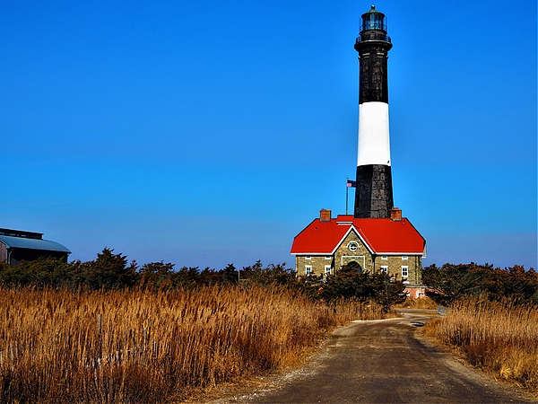
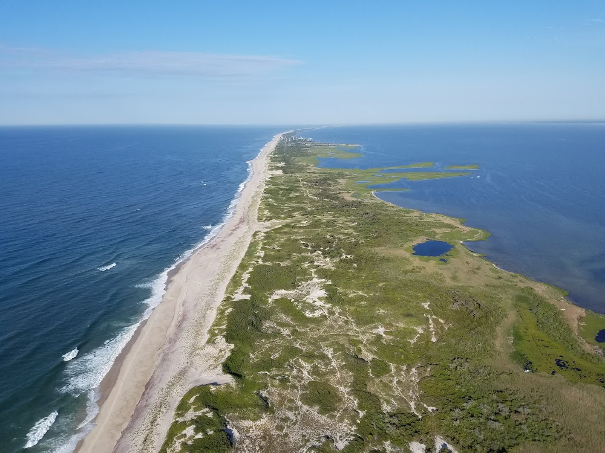

萨福克县 · Suffolk海滩天花板★★★★★★★★★★4.8 / 5谷歌评分 · 3,000+ 条评价
徒步 · 极佳骑行 · 海滩与沙路可骑烧烤 · 指定野餐区炭炉交通 · 开车或 LIRR+渡轮
火岛是一条细长的沙洲岛，隔着大南湾（Great South Bay）与长岛本岛相望。岛上没有贯通公路，中段的国家公园景点只能坐渡轮或私船到达——这份「麻烦」恰恰换来了长岛最干净的海滩和最完整的自然生态。

徒步与玩法
- 沉没森林自然步道（水手港 Sailors Haven）：约 1.5–1.6 英里环线，一半铺装路一半木栈道，平坦好走，约 1 小时走完，沿途 35 处解说牌；栈道对轮椅友好。只能坐渡轮到达。
- 守望山（Watch Hill）：约 2 英里栈道步道，并通往 Otis Pike 高沙丘荒野区——7 英里未开发的原始海岛，是纽约州唯一的联邦指定荒野区，可凭许可野营。
- 灯塔周边：灯塔 + 自然步道约 2 小时游览量。
- 海滩散步：几十英里大西洋海滩随便走，但必须走沙丘通道口，翻越沙丘违法。
- 威廉·弗洛伊德庄园（本岛 Mastic Beach）：《独立宣言》签署人故居，庭院 5 月 1 日–11 月 28 日开放；老宅目前装修关闭，仅冬季有活动。
骑行规则
可以在园内公路、停车场、全部大西洋海滩、灯塔区的 Burma Road 沙土路骑行；所有木栈道、码头区和荒野区禁止骑车。沙路松软，最好用胖胎车。渡轮带车可能另收费或要走货运，出发前问清；相邻的 Robert Moses 州立公园公路禁骑。
烧烤规则
只许在指定野餐区的炉子里烧炭（如水手港有野餐桌和烤炉）或守望山营地内；海滩、船上、码头栈道、野餐桌上全部禁火。野餐/露营可用丙烷等封闭燃料炉。炭灰必须用水浇透，不许埋沙。普通野餐不用申请许可，大型活动要许可。注意：燃料不能带上渡轮，要在岛上杂货店买。
地址
Ocean Beach, NY 11770（总部：120 Laurel St, Patchogue）
费用
入园免费；灯塔登塔成人 $10、老人/退伍军人/12 岁以下 $5，现役军人免费
开放
灯塔每天 10:00–16:00（6/30–劳工节到 17:00）；水手港/守望山游客中心仅 5 月中–10 月中开放
停车
NPS 无停车场；西端停 Robert Moses 州立公园 5 号场（州立收费，约 $8 起、夏季更高，2026 年价格未核实）；东端停 Smith Point 县立公园
从法拉盛怎么去
开车约 1–1.5 小时：去灯塔走 Robert Moses Causeway 到 Robert Moses 州立公园 5 号停车场；去东端（荒野游客中心）走 Sunrise Hwy 转 William Floyd Pkwy 到 Smith Point。公共交通：LIRR 蒙托克线到 Bay Shore（渡轮去西段）、Sayville（Sayville Ferry 去水手港/沉没森林）、Patchogue（Davis Park Ferry 去守望山，码头离车站步行可达）。渡轮 7–8 月班次全，春秋季减少，冬季几乎停航；单程约 $6.5–7（价格较旧，出行前到渡轮公司官网确认）。NPS 的渡轮景点只在 5 月中–10 月中开放。
提醒：夏季蚊虫和蜱虫多（5–9 月），带防虫喷雾；周末渡轮和海滩人多。救生员海滩在守望山和水手港，6 月底–劳工节。最佳季节：夏天游泳，夏末秋初散步人少、沉没森林有秋色。